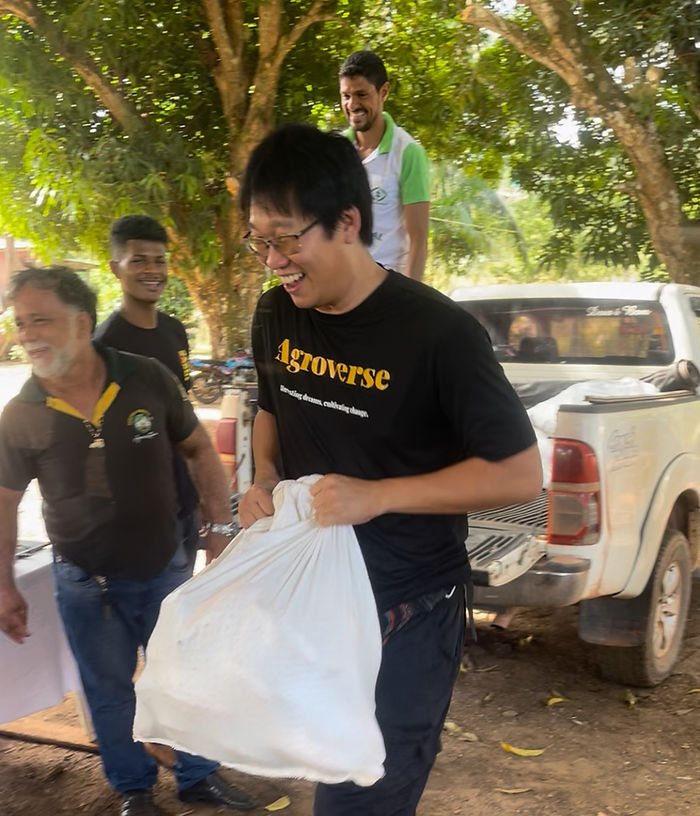

The quiet work between story and shipment
Most people meet a mission-driven food brand through a sentence on packaging or a photo from a farm trip. The operational reality lives elsewhere: in spreadsheets, warehouse receipts, bills of lading, inspection windows, and the overlapping time zones of people who care deeply but are tired. This essay is a composite field note—grounded in themes we see across supply-chain and community channels, not in any single private thread—about how physical logistics matures from enthusiasm into cadence.
The arc is familiar to many small teams that begin with reputation, curiosity, and introductions. Early work is defined by breadth: multiple regions, multiple buyers, many experiments running in parallel. Over time, surviving systems narrow around what can be repeated, measured, and funded without heroics every week.
Phase one: catalogs, context, and collateral
In early stages, a network brand often does a peculiar kind of geography. Headquarters may sit in one global city while storytelling chases opportunities in another—restaurant menus, tasting events, retail introductions. The artifacts of that season are SKU lists, price sheets, photography, and the quiet labor of translating farm reality into something a chef or buyer can glance at between services.
The trap is not ambition; it is unbounded surface area. Every new market implies new compliance questions, new lead times, and new promises. Without a single operational spine, documentation debt accumulates faster than inventory turns.
Phase two: origin conviction and the shift to containers
A second phase begins when the organization stops treating the supply chain like a slide deck and starts treating it like a schedule. Attention moves toward fewer origins and deeper relationships: cooperative meetings, sample rounds, moisture and fermentation discipline, export paperwork, and the unglamorous sequencing of bags, stripes, and seals.
The emotional center of gravity moves from presentation to handoff. A container is not a metaphor. It is a deadline that does not care about narrative. Freight teaches humility: cutoffs, chassis shortages, inspections, and insurance clauses reshape what “ready” means.
The long middle: ports, partners, and proof
Between farm gate and first retail placement lies a middle that rarely photographs well. It is where mission-driven brands either build repeatable partnerships or bleed margin on one-off fixes. Temperature regimes matter. Traceability matters. So does the boring excellence of naming inventory consistently and publishing movement in places stakeholders can verify without joining twelve chats.
TrueSight’s public records—such as shipment history and consignment tracking—exist because transparency is not an afterthought; it is part of the product when you ask consumers to believe a chain of custody.
Learning rhythm, not chasing drama
Cadence is the compound interest of operations: weekly procurement checks, monthly reconciliation, seasonal planning windows, and clear ownership for exceptions. When chaos returns, it is usually because cadence lapsed—not because the world got uniquely difficult.
For Agroverse and TrueSight, articulating that cadence in one place helps the community align expectations without pretending uncertainty can be deleted. If you want the explicit seasonal scaffolding, see our operational framework for cacao supply in 2026.
Closing: the reward is repeatability
The story that wins long-term is not the most cinematic container load; it is the one that can happen again—with documentation, margin, and farmer dignity intact. Logistics, at its best, is love made boring on purpose.
Join the discussion
We invite operators, growers, and retail partners to share what cadence looks like in your context—especially the unphotographed middle mile—in our Telegram community channel and on the DAO web app.